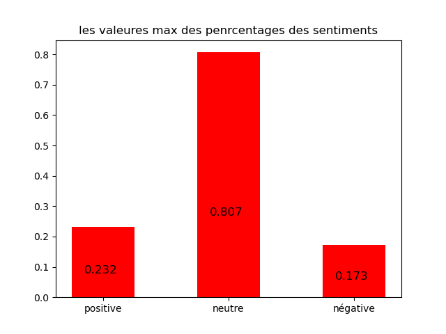
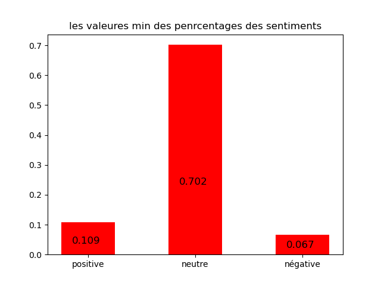

Quelques statistiques

tweet plus négatif :
L’ancienne figure des "Gilets jaunes", Éric Drouet, interpellé pour avoir violenté le fils de sa compagne, âgé de 1… https://t.co/JWXxW3GkO9
tweet plus négatif :
🚀 SpaceX : "C'est une ère nouvelle qui commence", s'enthousiasme l'astronaute français Patrick Baudry… https://t.co/dMpFKC9j6v

tweet plus négatif :
🚀 SpaceX : "C'est une ère nouvelle qui commence", s'enthousiasme l'astronaute français Patrick Baudry… https://t.co/dMpFKC9j6v
tweet plus négatif :
DIRECT 🔴 SpaceX : regardez l'amarrage des astronautes Bob Behnken et Doug Hurley à la Station spatiale internationa… https://t.co/9YVlAyvba8
| Nombre des tweets analysés | 274 |
| Nombres des hits dans la base | 5056 |
| Nombre moyen des réponses / Status | 7.8 |
| Nombre moyen des quoted tweets / Status | 0.01 |
| Date et heure de la derniere analyese | 02/06/2020, 23:27:42 |
| Temps de l'analyse en seconds | 83.52 |
La tables des sentiments en fonction des tweets
Tweets | Positive | Négative | Neutre |
|---|
Loading, please wait...
Tweets | Positive | Négative | Neutre |
|---|---|---|---|
| L’ancienne figure des "Gilets jaunes", Éric Drouet, interpellé pour avoir violenté le fils de sa compagne, âgé de 1… https://t.co/JWXxW3GkO9 | 0.173 | 0.115 | 0.712 |
| DIRECT 🔴 SpaceX : regardez l'amarrage des astronautes Bob Behnken et Doug Hurley à la Station spatiale internationa… https://t.co/9YVlAyvba8 | 0.084 | 0.109 | 0.807 |
| "C'est le prix à payer pour que l'activité reprenne" : Bayonne exonère les cafetiers des droits d'occupation des te… https://t.co/idG7oiYaNY | 0.084 | 0.109 | 0.807 |
| Coronavirus : l'hydroxychloroquine et la chloroquine sont inefficaces et même néfastes, selon une nouvelle étude… https://t.co/b9GRIRZxA0 | 0.113 | 0.146 | 0.741 |
| INFO FRANCEINFO. Affaire Adama Traoré : les proches de la victime dénoncent un faux témoignage… https://t.co/vmakQMhWcI | 0.113 | 0.146 | 0.741 |
| Suppressions d'emplois chez Renault : un délégué CGT dénonce "une trahison totale de la part de la direction"… https://t.co/7jLr4cp0RQ | 0.113 | 0.146 | 0.741 |
| "J'étais très heureux de retrouver les paroissiens", Monseigneur Michel Aupetit, archevêque de Paris Suivez le liv… https://t.co/YFgbuntgqH | 0.113 | 0.146 | 0.741 |
| ➡ Élections municipales 2020 : l'article à lire pour reprendre le fil de la campagne, interrompue par le coronaviru… https://t.co/uzDnKQkrV7 | 0.173 | 0.115 | 0.712 |
| Confinement : "Pas un seul salarié d'Orange n'a été au chômage partiel, l'entreprise a assumé la totalité de ses sa… https://t.co/gFj0QDwp05 | 0.173 | 0.115 | 0.712 |
| 💬 Le retour à l’école sera-t-il obligatoire en septembre ? "Bien entendu", assure Jean-Michel Blanquer ⤵️… https://t.co/ZUy7l8sKkW | 0.173 | 0.115 | 0.712 |
| 🚀 SpaceX : "C'est une ère nouvelle qui commence", s'enthousiasme l'astronaute français Patrick Baudry… https://t.co/dMpFKC9j6v | 0.067 | 0.232 | 0.702 |
| Rupture des Etats-Unis avec l'OMS : l'UE exhorte Washington de reconsidérer sa décision https://t.co/0ILzpxIvQk https://t.co/SqMauwl66I | 0.067 | 0.232 | 0.702 |
| 💬 "Nous avons un problème de rémunération des professeurs en France. Je vais évidemment continuer les efforts dans… https://t.co/ZngT7Bk8Qo | 0.113 | 0.146 | 0.741 |
| Coronavirus : l'hydroxychloroquine n'est pas efficace, selon deux études https://t.co/OzckVuZfhZ https://t.co/3VbKMErmVc | 0.113 | 0.146 | 0.741 |
| Christophe Castaner répond à Camélia Jordana : "La liberté du débat public ne permet pas de dire tout et n'importe… https://t.co/hgZ6ClEUqp | 0.084 | 0.109 | 0.807 |
| Affaire Morandini : le parquet de Paris demande un procès pour corruption de mineur à l'encontre de l'animateur… https://t.co/awxHJLj6Q9 | 0.067 | 0.232 | 0.702 |
| L'artiste plasticien Christo, célèbre pour avoir emballé le Pont-Neuf, est mort à l'âge de 84 ans… https://t.co/2G22keCM1N | 0.084 | 0.109 | 0.807 |
| DIRECT 🔴 Mort de George Floyd : le gouverneur du Minnesota autorise une "mobilisation complète" de la Garde nationa… https://t.co/3elxaeoc2B | 0.067 | 0.232 | 0.702 |
| 💬 "Nous n’avons jamais dit que 100% des élèves seraient accueillis en mai et juin. Ce sont deux mois anormaux. Ce q… https://t.co/nGzkJi4sfQ | 0.173 | 0.115 | 0.712 |
| Mort de George Floyd : Donald Trump "excite" la colère et "joue la campagne électorale", analyse un spécialiste des… https://t.co/Q3riNhusk7 | 0.067 | 0.232 | 0.702 |
| @franceinfo Raz le bol de ces magouilles, même si je ne suis pas RN, j'espère que les électeurs de Perpignan vont s… https://t.co/nwnBYhrmG4 | 0.113 | 0.146 | 0.741 |
| ▶️ "Les télécoms ont été à la hauteur de la crise et ont fait la preuve de leur force et de leur résilience", indiq… https://t.co/1XO5gvUP6Z | 0.113 | 0.146 | 0.741 |
| Déconfinement : l'attestation aux heures de pointe reste obligatoire dans les transports d'Ile-de-France "au moins… https://t.co/g7Zycx3Ta3 | 0.067 | 0.232 | 0.702 |
| AUDIO ▶️ Déconfinement : pour Marine Le Pen, “ce qu'on fait aujourd'hui, on aurait dû le faire il y a quatre mois e… https://t.co/yFdW8GU1tL | 0.067 | 0.232 | 0.702 |
| Paris : 92 personnes interpellées après une "marche des solidarités" qui visait à demander une régularisation des p… https://t.co/aE29lfNMFm | 0.084 | 0.109 | 0.807 |
| ⚡Coronavirus : la Commission nationale de l'informatique et des libertés donne son feu vert à l'application de traç… https://t.co/cNuI1Ntd3B | 0.113 | 0.146 | 0.741 |
| VIDEO. SpaceX : revivez le décollage historique de la fusée Falcon-9 avec deux astronautes à bord… https://t.co/pYUAaFYeyu | 0.113 | 0.146 | 0.741 |
| @franceinfo @jmblanquer Mr le ministre bonjour je travaille au crous de Rennes à peine avont nous repris que… https://t.co/xsLg8XGStJ | 0.113 | 0.146 | 0.741 |
| Déconfinement : à Paris, les restaurants et les bars sans terrasse pourront occuper "l'espace public", annonce Anne… https://t.co/XK1nd37nUJ | 0.084 | 0.109 | 0.807 |
| "Je n'ai aucune intention" de fermer le site de Maubeuge, assure le président du groupe Renault… https://t.co/1WLCxIyj1Y | 0.067 | 0.232 | 0.702 |
| ENQUÊTE FRANCEINFO. Comment le Covid-19 contraint les militaires et les croisiéristes à réinventer les navires… https://t.co/rcLpOQlfrk | 0.113 | 0.146 | 0.741 |
| "Il y aura enfin des règles" : en Italie, les travailleurs agricoles clandestins pourront être régularisés… https://t.co/WAAOuDJflq | 0.113 | 0.146 | 0.741 |
| 🚀 #SpaceX le début d'une ère nouvelle ? Dans quatre minutes, décollage de la fusée habitée Falcon-9 en direction de… https://t.co/gYdMRjTNjB | 0.067 | 0.232 | 0.702 |
| Décrocheurs : l'Éducation nationale a perdu le contact avec 4% des élèves en moyenne à la fin du confinement, indiq… https://t.co/MOhdiBcPZL | 0.113 | 0.146 | 0.741 |
| Déconfinement : des cloches en Plexiglas pour rouvrir les restaurants ? https://t.co/quvRJWeicz https://t.co/suYaX1TCBy | 0.113 | 0.146 | 0.741 |
| DIRECT 🔴 Coronavirus : 39 morts à l'hôpital en France en 24 heures. On compte 1 319 malades atteints d’une forme sé… https://t.co/u4XE5zkvTP | 0.084 | 0.109 | 0.807 |
| DIRECT 🔴 "Il ne m'a même pas donné l'occasion de parler" : le frère de George Floyd déçu par sa conversation au tél… https://t.co/yfJxLbZzbO | 0.067 | 0.232 | 0.702 |
| VIDEO ▶ Audiovisuel public : "On a besoin de faire le point sur les conséquences financières de la crise" pour pou… https://t.co/1P5DV8YysQ | 0.113 | 0.146 | 0.741 |
| Reprise des cours : "La plupart des proviseurs sont prêts", les lycéens rentreront "le 3 juin ou le surlendemain le… https://t.co/8gMvmpoOr0 | 0.113 | 0.146 | 0.741 |
| AUDIO ▶ La startup française Alice & Bob veut fabriquer l’un des premiers ordinateurs quantiques du futur, c'est da… https://t.co/RjMMTZbrmK | 0.113 | 0.146 | 0.741 |
| Coronavirus : les Etats-Unis mettent fin à leur relation avec l'Organisation mondiale de la santé… https://t.co/i1wRcE3TuO | 0.113 | 0.146 | 0.741 |
| Rémunération des enseignants : l'augmentation "de la rémunération qui est prévue pour 2021" est "maintenue", assure… https://t.co/1Vx9zDWpIR | 0.113 | 0.146 | 0.741 |
| Municipales : le plafond des frais de campagne sera augmenté de 20%, annonce Christophe Castaner… https://t.co/YzlrQtM6wF | 0.113 | 0.146 | 0.741 |
| Qui était George Floyd, dont la mort après une intervention policière est à l'origine des manifestations qui secoue… https://t.co/DktLr2Zu4W | 0.084 | 0.109 | 0.807 |
| Chômage partiel, prime à la conversion, auto-écoles... Voici tout ce qui change à partir du 1er juin (2/5)… https://t.co/qd0IbOBisP | 0.113 | 0.146 | 0.741 |
| "Le calendrier législatif a été considérablement modifié" : des députés réclament le retour du projet de loi sur la… https://t.co/s17siATE8W | 0.113 | 0.146 | 0.741 |
| "Je suis désespéré" : les salariés de l'usine Renault de Flins ne croient plus en l'avenir du site emblématique du… https://t.co/khGk8l309u | 0.173 | 0.115 | 0.712 |
| Coronavirus : le marché automobile français continue de plonger et enregistre une baisse de 50,34% en mai… https://t.co/vuovbOMf0f | 0.113 | 0.146 | 0.741 |
| Mort de George Floyd : des journalistes visés lors des manifestations aux Etats-Unis https://t.co/325QVx1ue5 https://t.co/aE3i6Vuijp | 0.067 | 0.232 | 0.702 |
| @franceinfo #ObamaGate #ObamaGate #ObamaGate #ObamaGate #ObamaGate #ObamaGate #ObamaGate #ObamaGate #ObamaGate… https://t.co/YYHIPzuZ0E | 0.113 | 0.146 | 0.741 |
| 🔴 DIRECT Minneapolis, New York, Atlanta, Washington... Les manifestations gagnent plusieurs villes des Etats-Unis a… https://t.co/JZatJgWn82 | 0.084 | 0.109 | 0.807 |
| Dordogne : un octogénaire retrouvé vivant après avoir passé quatre jours sans manger ni boire dans un fossé… https://t.co/fazEbIkWH6 | 0.067 | 0.232 | 0.702 |
| 🚀 SpaceX : "C'est une ère nouvelle qui commence", s'enthousiasme l'astronaute français Patrick Baudry… https://t.co/5EGZMmB2rj | 0.084 | 0.109 | 0.807 |
| #VraiOuFake ❓ 🔎 Coronavirus : l'étude du "Lancet" sur la chloroquine est-elle "foireuse", comme l'affirme le profes… https://t.co/KiNNHVpStj | 0.067 | 0.232 | 0.702 |
| ▶️ Faut-il taxer plus largement les héritages ? "J’y suis plutôt favorable", estime Stéphane Richard, le PDG d'Oran… https://t.co/ZXklZsVJym | 0.084 | 0.109 | 0.807 |
| EN IMAGES 📷 De Minneapolis aux abords de la Maison Blanche... La colère suscitée par la mort de George Floyd gagne… https://t.co/k6RRIftdpJ | 0.113 | 0.146 | 0.741 |
| 💬 "La plupart des proviseurs sont prêts pour une pré-rentrée", annonce Jean-Michel Blanquer, ministre de l'Educatio… https://t.co/lKRS8XDfkw | 0.173 | 0.115 | 0.712 |
| Regroupement des usines Renault dans le Nord : "C'est la stupeur, l'incompréhension" pour le maire de Maubeuge… https://t.co/Ep0wghtwxF | 0.113 | 0.146 | 0.741 |
| @franceinfo Vous pouvez la garder. | 0.113 | 0.146 | 0.741 |
| AUDIO ▶ Plan de relance automobile : Luc Chatel appelle les Français "à se précipiter à partir du 1er juin dans les… https://t.co/IlIhj65wLP | 0.113 | 0.146 | 0.741 |
| Mort de Guy Bedos : "Il remuait la merde pour la faire remonter jusqu'à ceux qui dirigent", témoigne Josiane Balask… https://t.co/peM793IlkC | 0.173 | 0.115 | 0.712 |
| Déconfinement : "Les mairies devraient faire une auto-réquisition de tous leurs lieux publics" pour accueillir plus… https://t.co/RzweDXfy5k | 0.113 | 0.146 | 0.741 |
| Coronavirus : les diabétiques âgés avec complications sont les plus à risque, précise une étude… https://t.co/K9sUfCnObR | 0.173 | 0.115 | 0.712 |
| Camion charnier en Angleterre : les treize personnes interpellées en France ont été mises en examen… https://t.co/zCh8qTaS9g | 0.113 | 0.146 | 0.741 |
| Une manifestation pour la régularisation des sans-papiers s'élance à Paris malgré l'interdiction de la préfecture… https://t.co/6Nm5DNjWis | 0.067 | 0.232 | 0.702 |
| Déconfinement : le parc Astérix va rouvrir ses portes le 15 juin avec un nombre limité de visiteurs… https://t.co/DADOl1JSJk | 0.113 | 0.146 | 0.741 |
| "Ce n'est pas possible que ce soit encore aujourd'hui une problématique" : le patineur Guillaume Cizeron se confie… https://t.co/WXNQkZNICa | 0.084 | 0.109 | 0.807 |
| @franceinfo https://t.co/CaQfOn4Jma | 0.113 | 0.146 | 0.741 |
| "La vie normale reprend ses droits", affirme le médecin Jérôme Marty, après l'annonce de la fin d'un siège sur deux… https://t.co/Kl8E1Sn5qS | 0.084 | 0.109 | 0.807 |
| "Quand on souffre comme ça, ce n'est pas la peine de rester" : Hélène, centenaire, en grève de la faim pour qu'on l… https://t.co/UfREuAPjQl | 0.084 | 0.109 | 0.807 |
| Le parvis de Notre-Dame va rouvrir au public à 15 heures cet après-midi, plus d’un an après l’incendie de la cathéd… https://t.co/5snzNRu9rF | 0.113 | 0.146 | 0.741 |
| DIRECT 🔴 Mort de George Floyd : des affrontements éclatent devant la Maison Blanche, malgré le couvre-feu imposé à… https://t.co/UaAVHyM4i2 | 0.113 | 0.146 | 0.741 |
| DIRECT 🔴 Coronavirus : un vaccin pourrait être prêt d'ici à la fin de l'année, indique la Chine Suivez le live ⤵… https://t.co/b4bpY2tlQc | 0.067 | 0.232 | 0.702 |
| "Quand on souffre comme ça, ce n'est pas la peine de rester" : Hélène, centenaire, en grève de la fin pour qu'on lu… https://t.co/MnFFTe56Fc | 0.067 | 0.232 | 0.702 |
| Vous écoutez France Info, là, maintenant? Alors vous écoutez François Lepage. Un certain flegme british. http://t.co/I8QA0ym2Ip | 0.113 | 0.146 | 0.741 |
| 💬 "Notre objectif est que tout élève de collège, même en zone orange, ait de nouveau eu un contact physique avec so… https://t.co/oYNYfi0waT | 0.173 | 0.115 | 0.712 |
| @franceinfo Le Shadok astronaute a fini sa fusée. Il s'élance dans l'espace. Sur Terre, les Shadoks continuent de… https://t.co/0GoffhsdeG | 0.113 | 0.146 | 0.741 |
| Maroc : un journaliste placé en détention pour agression sexuelle contre un jeune homosexuel… https://t.co/dY2o60GZgK | 0.113 | 0.146 | 0.741 |
| Coronavirus : des dentistes posent nus sur les réseaux sociaux pour interpeller sur le manque de moyens de protecti… https://t.co/wHjhVaaHO4 | 0.173 | 0.115 | 0.712 |
| Pierre Moscovici nommé à la tête de la Cour des comptes https://t.co/506wHbYEHp https://t.co/zQFtpD0yO7 | 0.067 | 0.232 | 0.702 |
| "Pour les salles de cinéma, on travaille sur une réouverture à partir de début juillet", selon le ministre de la Cu… https://t.co/umvSMUrZkt | 0.173 | 0.115 | 0.712 |
| Distribution de repas : "Des gens qui étaient à la limite, et qui s'en sortaient tout juste, ne s'en sortent plus",… https://t.co/18ciDtvSB2 | 0.113 | 0.146 | 0.741 |
| 🌍 Avec la crise du #Covid19, de nouveaux usages nécessitant du plastique sont apparus. Un retour en force qui inqui… https://t.co/66z16MiDfC | 0.173 | 0.115 | 0.712 |
| Etats-Unis : pour Barack Obama, la mort de George Floyd ne devrait pas être "normale" en 2020… https://t.co/8dlPp8ziNd | 0.067 | 0.232 | 0.702 |
| 100% des billets SNCF dès la mi-juin : le retour à la normale "va dans le sens de l'histoire", la situation "était… https://t.co/DNZPj6mONb | 0.113 | 0.146 | 0.741 |
| ENQUÊTE FRANCEINFO. Application StopCovid : accouchée dans la douleur et déjà limitée https://t.co/zn61hrhxzV https://t.co/32ywSQBARe | 0.113 | 0.146 | 0.741 |
| VIDÉO. La situation des Noirs aux États-Unis est "pire aujourd'hui qu'à l'époque", selon la fille de Martin Luther… https://t.co/Edz5K93Q0a | 0.173 | 0.115 | 0.712 |
| Le nombre d'arrêts cardiaques a doublé pendant le confinement en région parisienne, selon une étude de l'Inserm… https://t.co/pHANDVmFWM | 0.173 | 0.115 | 0.712 |
| ENQUETE FRANCEINFO. Coronavirus : pourquoi la France est-elle incapable de connaître le nombre de soignants infecté… https://t.co/KOYaybGVCO | 0.084 | 0.109 | 0.807 |
| VIDEO. Mort de George Floyd : deux voitures de police foncent sur la foule à New York https://t.co/DmqLedWCjx https://t.co/C7wSO4T8KL | 0.067 | 0.232 | 0.702 |
| @franceinfo L’application quoi ? Cedric qui ? #cedrico #StopCovid #gouvernement #lrem #macron #COVID19 #coronavirus… https://t.co/j70IveWGqo | 0.113 | 0.146 | 0.741 |
| Déconfinement : "100%" des billets de trains en vente dès mi-juin et la fin d'un siège sur deux, annonce Jean-Bapti… https://t.co/a8SisikLkn | 0.113 | 0.146 | 0.741 |
| DIRECT 🔴 #SpaceX "Welcome to Bob and Doug !" : les deux astronautes de la capsule Dragon, Bob Behnken et Doug Hurle… https://t.co/gnIszhuXl1 | 0.113 | 0.146 | 0.741 |
| @franceinfo A leur corps défendant, toute idéologie confondue, ils ont été bien manipulés par un très grand infecti… https://t.co/S9noPLr2YS | 0.113 | 0.146 | 0.741 |
| Déconfinement : de l'Alsace à la Bourgogne, la timide reprise des "petits" musées de régions… https://t.co/r3RBj5x6r0 | 0.173 | 0.115 | 0.712 |
| VIDEO ▶ Crise liée au coronavirus : François Hollande propose "un plan en 5 points" avec notamment "un chèque de co… https://t.co/Oy6gRgVfl4 | 0.113 | 0.146 | 0.741 |
| L'Espagne pourrait accueillir des touristes allemands, français et scandinaves dès la fin juin… https://t.co/lFSljfEwGl | 0.113 | 0.146 | 0.741 |
| DIRECT 🔴 Coronavirus : l'application StopCovid sera finalement disponible mardi 2 juin à midi, annonce Cédric O Su… https://t.co/o8DgLP6jmo | 0.067 | 0.232 | 0.702 |
| Municipales : à Perpignan, l'écologiste Agnès Langevine se retire pour faire barrage au RN Louis Aliot… https://t.co/c8rBzemY0a | 0.067 | 0.232 | 0.702 |
| 🚀 #SpaceX Les deux astronautes Doug Hurley et Bob Behnken arriveront demain après-midi. Arrimage vers 16h30, ouvert… https://t.co/lndVQzWpAo | 0.173 | 0.115 | 0.712 |
| DIRECT 🔴 Coronavirus : le Royaume-Uni prévoit de rouvrir les commerces en juin Suivez le live ⤵… https://t.co/Lj9lSc9f3K | 0.173 | 0.115 | 0.712 |
| Russie : plus de 200 personnes arrêtées lors d'une manifestation de l'opposition à Moscou https://t.co/1E8rKT6EbV https://t.co/aJJIsKegID | 0.173 | 0.115 | 0.712 |
| @franceinfo Ce qu’il y à de bien c’est que c’est pas avec tout ceux qui refusent de contribuer, que la propagation… https://t.co/hKYzQVVcgT | 0.113 | 0.146 | 0.741 |
| Guéri du coronavirus, le député du Haut-Rhin Jean-Luc Reitzer raconte : "Après ça, on n'est plus tout à fait le mêm… https://t.co/Rn80vBDrU1 | 0.067 | 0.232 | 0.702 |
| Plan d'économies chez Renault : c'est "le risque de la mort pure et simple" de l'entreprise "à brève échéance", ave… https://t.co/MwXN3lrl2Y | 0.113 | 0.146 | 0.741 |
| Réouverture du parvis de Notre-Dame de Paris : "Cela donne un message d'espoir", Mgr Michel Aupetit, archevêque de… https://t.co/ms2NbLlnXh | 0.113 | 0.146 | 0.741 |
| La chloroquine jugée inefficace pour le coronavirus : le professeur Raoult dénonce "une étude foireuse"… https://t.co/aq1VVtUUN1 | 0.113 | 0.146 | 0.741 |
| Mort de George Floyd : les manifestants veulent ''la justice raciale et la justice sociale face à des décennies d'a… https://t.co/NzbMMfh5wk | 0.067 | 0.232 | 0.702 |
| AUDIO ▶ Peut-on tout diffuser dans un reportage ? C'est à réécouter 🔊 dans le rendez-vous de la médiatrice, juste l… https://t.co/Tm3J7CtxaP | 0.113 | 0.146 | 0.741 |
| 💬 Tout sera prêt le 2 juin dans les lycées en zone verte ? "L’objectif est celui-là. Après, il peut y avoir des exc… https://t.co/yo3LysmNPS | 0.173 | 0.115 | 0.712 |
| VIDEO ▶ Coronavirus : "Nous ne ferons pas la fête de la musique comme d'habitude", estime le ministre de la Culture… https://t.co/Est1UjvaxP | 0.113 | 0.146 | 0.741 |
| DIRECT 🔴 Coronavirus : après deux mois et demi de fermeture, les restaurateurs se préparent pour la réouverture Su… https://t.co/OD58MckNXM | 0.113 | 0.146 | 0.741 |
| DIRECT 🔴 Mort de George Floyd : Trump annonce vouloir désigner la mouvance "Antifa" comme organisation terroriste… https://t.co/SuBh51iaIt | 0.067 | 0.232 | 0.702 |
| AUDIO ▶ Jerry Lee Lewis, Maud Geffray et Maxime Delpierre sont au menu de la playlist franceinfo, en écoute libre i… https://t.co/87T7A5P478 | 0.173 | 0.115 | 0.712 |
| Un 10e groupe politique, situé dans la majorité, se crée à l'Assemblée nationale https://t.co/Qa5ys1tnwD https://t.co/NMCycRNgEn | 0.113 | 0.146 | 0.741 |
| 🚀 SpaceX : "Le trampoline fonctionne", lance avec ironie Elon Musk au patron de l'agence spatiale russe… https://t.co/xB4JqtuYuh | 0.084 | 0.109 | 0.807 |
| @franceinfo @jmblanquer Faudrait que l.on rappelle à certaines personnes que nous sommes pas des Esclaves dir… https://t.co/PLqRGNgq7k | 0.113 | 0.146 | 0.741 |
| Flèche de Notre-Dame de Paris : "Il semble qu'une majorité se dessine pour une reconstruction à l'identique", Mgr M… https://t.co/oNnQGeIR9Y | 0.113 | 0.146 | 0.741 |
| Minneapolis : le policier mis en cause dans la mort de George Floyd a été arrêté et inculpé d'homicide involontaire… https://t.co/sQkorMn7SO | 0.067 | 0.232 | 0.702 |
| Mort de Christo : "Il n'était pas seulement le concepteur de ses oeuvres, il en était aussi l'artisan", réagit Jack… https://t.co/HS9kSvn1o9 | 0.084 | 0.109 | 0.807 |
| "On avait préparé des excuses à l'avance" : à Etretat, certains ont dépassé la limite des 100 kilomètres pour un bo… https://t.co/DXr1AwOY7N | 0.113 | 0.146 | 0.741 |
| "C'est important, il me manque une partie de moi" : interdits et pourtant largement pratiqués, faut-il légaliser le… https://t.co/ggDPiECxqA | 0.173 | 0.115 | 0.712 |
| DIRECT 🔴 Coronavirus : la Corée du Sud réactive des mesures après de nouveaux cas Suivez le live ⤵️… https://t.co/2TqCMhYrdC | 0.173 | 0.115 | 0.712 |
| Etats-Unis : Donald Trump peut-il réguler Twitter et les autres réseaux sociaux, comme il affirme vouloir le faire … https://t.co/X0I0thSyRu | 0.067 | 0.232 | 0.702 |
| DIRECT 🔴 Coronavirus : 57 morts en 24 heures dans les hôpitaux en France, la baisse se poursuit en réanimation Sui… https://t.co/5i2Tmi9jhG | 0.067 | 0.232 | 0.702 |
| Coronavirus : les viticulteurs en difficulté, la région Occitanie promet un plan d'aides "inédit"… https://t.co/CCW9GVeCHd | 0.113 | 0.146 | 0.741 |
| Déconfinement : accidents mortels, excès de vitesse... la Sécurité routière s'inquiète de "premiers chiffres alarma… https://t.co/BuOiZ2sIor | 0.113 | 0.146 | 0.741 |
| Chômage partiel, prime à la conversion, auto-écoles... Voici tout ce qui change à partir du 1er juin… https://t.co/uoHTfdLlUH | 0.173 | 0.115 | 0.712 |
| L'ex-père Preynat devra indemniser ses victimes, "l'Église s'exclue de sa propre responsabilité", déplore le présid… https://t.co/veHfMJdeau | 0.067 | 0.232 | 0.702 |
| ENQUETE FRANCEINFO. Coronavirus : peut-on se fier aux tests sérologiques proposés par les laboratoires ?… https://t.co/ClWpuIza7n | 0.084 | 0.109 | 0.807 |
| "On a le sentiment d'un relâchement" : les excès de vitesse et les accidents mortels en hausse depuis le déconfinem… https://t.co/fx5ezJbvYB | 0.084 | 0.109 | 0.807 |
| Arrêt du championnat de foot de Ligue 1 : "La logique économique et européenne était d'aller au bout des compétitio… https://t.co/1im3UBffSH | 0.173 | 0.115 | 0.712 |
| @franceinfo C’est la réouverture qui se « profile » et non les bars et restaurant qui se « profilent »... | 0.113 | 0.146 | 0.741 |
| "Tout sera différent" après l'épidémie de coronavirus dans un monde "meilleur ou pire", prévient le pape François… https://t.co/j9psxNljJI | 0.067 | 0.232 | 0.702 |
| Haute-Garonne : la gendarmerie alerte sur la présence de tortues carnivores en bordure du canal du Midi… https://t.co/beTDFVCCDO | 0.084 | 0.109 | 0.807 |
| 💬 Annulation de l’oral du bac de français : "C’est surtout pour des raisons d’équité", précise Jean-Michel Blanquer… https://t.co/HiMxfEB8ji | 0.173 | 0.115 | 0.712 |
| L'humoriste Jean-Marie Bigard "pourrait" être "intéressé" par la présidentielle de 2022 https://t.co/mEB60xz1fk https://t.co/mZzkNBvdI7 | 0.113 | 0.146 | 0.741 |
| DIRECT 🔴 Mort de George Floyd : un homme retrouvé mort près d'une voiture brûlée à Minneapolis Suivez le live ⤵… https://t.co/Tty2FdNuT1 | 0.113 | 0.146 | 0.741 |
| Etats-Unis : ce que l'on sait de Derek Chauvin, le policier mis en examen après la mort de George Floyd… https://t.co/OV6lTUfqI4 | 0.067 | 0.232 | 0.702 |
| Municipales : "Les Français ne doivent pas avoir à choisir entre leur santé et leur droit civique", selon un député… https://t.co/scB1Wmh137 | 0.067 | 0.232 | 0.702 |
| Difficultés des bars et restaurants : "Je connais des cas de suicides et j'ai peur que si on ne fait rien, ça risqu… https://t.co/Fgtcug2bpM | 0.067 | 0.232 | 0.702 |
| AUDIO ▶️ Contrôle de température à l'aéroport, port du masque, nourriture pré-emballée : de nouvelles règles pour l… https://t.co/k0Rh1IB4Kg | 0.173 | 0.115 | 0.712 |
| SpaceX : "Le jour où Thomas Pesquet pourra décoller de la Guyane, il se passera quelque chose en Europe", rêve le P… https://t.co/i9AvaDC08f | 0.067 | 0.232 | 0.702 |
| "Il faut aller là où l'air se renouvelle le plus souvent" : un professeur de médecine défend la réouverture des par… https://t.co/uXjNY1qYys | 0.173 | 0.115 | 0.712 |
| Français bloqués au Maghreb : Jean-Yves Le Drian annonce des "vols quotidiens" depuis Alger et des "liaisons mariti… https://t.co/Q0CDsg2dlf | 0.113 | 0.146 | 0.741 |
| ENQUETE FRANCEINFO 👉 Coronavirus : peut-on se fier aux tests sérologiques proposés par les laboratoires ?… https://t.co/p2xszvTxD6 | 0.084 | 0.109 | 0.807 |
| VIDEO. "On pourrait assister à un 'Irma social'" : Saint-Martin voit rouge contre le plan de prévention des risques… https://t.co/IU5IuEs8HQ | 0.173 | 0.115 | 0.712 |
| "Il y aura enfin des règles" : en Italie, les travailleurs agricoles clandestins pourront être régularisés (5/5)… https://t.co/tYL5E9cLcv | 0.113 | 0.146 | 0.741 |
| Donald Trump sanctionne la Chine en révoquant le statut spécial de Hong Kong https://t.co/hmcZy5yUZN https://t.co/fpJGvRX4EJ | 0.084 | 0.109 | 0.807 |
| VIDEO 👉 Renault : "Les projets d'extension au Maroc, en Roumanie et en Russie n'auront pas lieu", assure Bruno Le M… https://t.co/yppXweUWTL | 0.084 | 0.109 | 0.807 |
| "C'est un acte de la vie qui continue" : les mariages reprennent timidement, avec des règles strictes… https://t.co/TXpT08xfFE | 0.113 | 0.146 | 0.741 |
| AUDIO ▶ La Turquie en proie à toutes les inquiétudes, c'est le sujet de Micro européen, à retrouver ici ⤵ 🔊… https://t.co/t7urrNEfO5 | 0.113 | 0.146 | 0.741 |
| "On est super frustrés, ç'aurait été un Roland-Garros incroyable" : les amateurs de tennis dans l'attente de l'édit… https://t.co/5y1z8Qah0h | 0.067 | 0.232 | 0.702 |
| Pollution : "On voit arriver une vague de déchets plastiques", s'inquiète l'association Zero Waste France… https://t.co/ymZ5mBi2D0 | 0.173 | 0.115 | 0.712 |
| Une cérémonie pour Guy Bedos le 4 juin à l'église Saint-Germain-des-Prés à Paris https://t.co/me1dEgFGon https://t.co/20fXQfhvhF | 0.084 | 0.109 | 0.807 |
| L'application StopCovid sera finalement disponible mardi 2 juin à midi, annonce Cédric O https://t.co/Jk69HjkKWm https://t.co/xEtJmm5Fsr | 0.067 | 0.232 | 0.702 |
| Déconfinement : les écoles pourront-elles vraiment accueillir tous les élèves volontaires en juin ?… https://t.co/cMRxX9POUI | 0.173 | 0.115 | 0.712 |
| Pourquoi jeter son masque de protection par terre est-il dangereux et polluant ? https://t.co/wKKmykjr9f https://t.co/W4j9JJpSGY | 0.173 | 0.115 | 0.712 |
| @franceinfo Qui s'en balance les bijoux de famille ? | 0.113 | 0.146 | 0.741 |
| 🔴 DIRECT. Déconfinement : "100% de l'offre" de la SNCF commercialisée à partir de la mi-juin et la règle d'un siège… https://t.co/ToDOhIvXLy | 0.067 | 0.232 | 0.702 |
| "Pourquoi en 2020 on en est toujours là ?" : des manifestants crient leur colère sous les fenêtres de Donald Trump… https://t.co/sSinrCGWSJ | 0.067 | 0.232 | 0.702 |
| Le "racisme anti-Blancs" n'existe pas pour les sciences sociales. Car le racisme, ce sont des agressions et des inj… https://t.co/kYyl3MBOP1 | 0.173 | 0.115 | 0.712 |
| Coronavirus : les Etats-Unis ont envoyé 2 millions de doses d'hydroxychloroquine au Brésil https://t.co/DoKxqRIwwN https://t.co/iA3OjiTUJY | 0.067 | 0.232 | 0.702 |
| "On a diminué nos prix pour la reprise" : avec la réouverture du canal du Midi, les restaurants et les hôtels espèr… https://t.co/t8qmDwPqAf | 0.173 | 0.115 | 0.712 |
| SpaceX : "C'était très important de récupérer un deuxième moyen indépendant d'accès à l'ISS", estime le spationaute… https://t.co/PelaM4tA6T | 0.067 | 0.232 | 0.702 |
| SpaceX va retenter de lancer son premier vol habité ce soir à 21h22 heure française 🚀 https://t.co/He3ZrJxvNM https://t.co/C2EZ4qVAf7 | 0.173 | 0.115 | 0.712 |
| Impact économique du coronavirus sur l'Eglise : "Des diocèses vivent beaucoup de la quête, la quête étant absente ç… https://t.co/fOPmyyPGeT | 0.084 | 0.109 | 0.807 |
| 🔴 DIRECT. Mort de George Floyd : les États-Unis toujours sous haute tension, le couvre-feu imposé dans plusieurs vi… https://t.co/CLftOh71f6 | 0.084 | 0.109 | 0.807 |
| Reims : un traiteur livre 140 repas aux détenus de la prison pour les remercier de s'être mobilisés pour les soigna… https://t.co/9OOoOHzbuv | 0.084 | 0.109 | 0.807 |
| La théologienne Anne Soupa "candidate" à l'archevêché de Lyon pour alerter sur l'invisibilité des femmes dans l'Egl… https://t.co/s5ZN8jo26F | 0.173 | 0.115 | 0.712 |
| Possibilité pour les bars et restaurants d'occuper l'espace public à Paris : "C'est une charte très souple, basée s… https://t.co/5CcCvyvj4S | 0.067 | 0.232 | 0.702 |
| 🔴 DIRECT. Sur la plage ou dans les parcs, les Français soufflent avant la phase 2 du déconfinement, suivez la situa… https://t.co/5cZ7weoM1W | 0.067 | 0.232 | 0.702 |
| Camion charnier en Angleterre : les treize personnes interpellées en France ont été mises en examen… https://t.co/D3R2XXk47F | 0.113 | 0.146 | 0.741 |
| 🔴 DIRECT. Déconfinement : les parcs et les jardins rouvrent ce matin, en attendant les cafés et les restaurants mar… https://t.co/H1l07Zjlwx | 0.173 | 0.115 | 0.712 |
| DIRECT 🔴 Vol habité SpaceX : Doug Hurley et Bob Behnken font leurs adieux à leur famille avant la deuxième tentativ… https://t.co/FKT37r5gV2 | 0.084 | 0.109 | 0.807 |
| 💬 "Souvenez-vous des pétitions que j’ai eues pour m’empêcher d’ouvrir [les écoles il y a 3 semaines] Mme Hidalgo av… https://t.co/HcXMKGMU8P | 0.173 | 0.115 | 0.712 |
| Mort de George Floyd : Joe Biden s'est rendu sur les lieux d'une manifestation contre le racisme… https://t.co/LLiW8XTRRE | 0.113 | 0.146 | 0.741 |
| Mort de George Floyd : Lewis Hamilton dénonce le silence du monde de la F1 "dominé par les blancs"… https://t.co/piWearyXhI | 0.067 | 0.232 | 0.702 |
| @franceinfo https://t.co/BiK5cnnKkm | 0.113 | 0.146 | 0.741 |
| Coronavirus : la Commission nationale de l'informatique et des libertés donne son feu vert à l'application de traça… https://t.co/JaPHi895A4 | 0.113 | 0.146 | 0.741 |
| #SPACEX La fusée vient de décoller ! Le décollage de la première mission spatiale habitée organisée par les Etats-U… https://t.co/PLlLnrkJdi | 0.084 | 0.109 | 0.807 |
| Coronavirus : l'OMS suspend "temporairement" les essais cliniques avec l'hydroxychloroquine, par mesure de précauti… https://t.co/vA9p2r5DfW | 0.113 | 0.146 | 0.741 |
| La réouverture des #bars et des #restaurants se profilent. Et comment ça se passe ailleurs dans le monde ? 🇧🇪🇮🇹🇬🇧… https://t.co/6Vu3Y2OkdS | 0.113 | 0.146 | 0.741 |
| INFO FRANCEINFO. Affaire Adama Traoré : une expertise médicale écarte la responsabilité des forces de l'ordre… https://t.co/IxJKVaLPG9 | 0.113 | 0.146 | 0.741 |
| DIRECT 🔴 SpaceX : la capsule Dragon avec deux astronautes américains à bord s'est amarrée à l'ISS 🚀 https://t.co/GmjEaCTGxc | 0.067 | 0.232 | 0.702 |
| Fin de l'interdiction de déplacement à plus de 100 kilomètres : "La SNCF est comme punie puisqu'elle ne peut pas ve… https://t.co/zDi2MUANL9 | 0.173 | 0.115 | 0.712 |
| Etats-Unis : contrairement à Twitter, Facebook refuse de censurer les publications de Donald Trump… https://t.co/2bTumhtGLX | 0.084 | 0.109 | 0.807 |
| Raphaël Ibanez : en novembre, le XV de France doit "gagner une à deux places au classement mondial"… https://t.co/mbmKUgyWer | 0.173 | 0.115 | 0.712 |
| "C’est un bonheur d’être de nouveau dans un musée" : à Paris, le musée Jacquemart-André rouvre et prolonge l’exposi… https://t.co/cZP2Y6Canp | 0.173 | 0.115 | 0.712 |
| Déconfinement : "100%" des billets de trains en vente dès mi-juin et la fin d'un siège sur deux, annonce Jean-Bapti… https://t.co/vYiXXC0R3p | 0.084 | 0.109 | 0.807 |
| @celineasselot #franceinfo : L'audience du 17h/20h de @nico_teillard est en hausse et compte chaque jour 1 127 000… https://t.co/s0rPZbtUIK | 0.113 | 0.146 | 0.741 |
| ENQUETE FRANCEINFO. Coronavirus : pourquoi la France est-elle incapable de connaître le nombre de soignants infecté… https://t.co/V8k72L5JI7 | 0.084 | 0.109 | 0.807 |
| Mort de George Floyd aux Etats-Unis : troisième nuit d'affrontements avec la police à Minneapolis, la garde nationa… https://t.co/szM8vjoILr | 0.113 | 0.146 | 0.741 |
| DIRECT 🔴 Déconfinement : les parcs et les jardins ont rouvert en région parisienne, en attendant les cafés et les r… https://t.co/tRODeRjKPX | 0.113 | 0.146 | 0.741 |
| Coronavirus : à Jérusalem, l'esplanade des Mosquées rouvre après dix semaines de fermeture https://t.co/SIQWkIGFop https://t.co/LoKa0EFHUZ | 0.113 | 0.146 | 0.741 |
| #VraiOuFake ❓ 🔎 La preuve que l’hydroxychloroquine est efficace existe-t-elle ? https://t.co/d23VRjlIYk https://t.co/PIZL800ewh | 0.113 | 0.146 | 0.741 |
| Un marchand d'art offre un tableau de Spranger au Rijksmuseum d'Amsterdam en hommage aux victimes du coronavirus… https://t.co/QbfHBGdBSe | 0.173 | 0.115 | 0.712 |
| DIRECT 🔴 Lancement de la fusée Falcon-9 : SpaceX 🚀 donne le feu vert au remplissage des réservoirs, Donald Trump e… https://t.co/t6ugkZAdZu | 0.067 | 0.232 | 0.702 |
| Municipales à Paris : "Je ne fais pas alliance avec Rachida Dati" car "je préfère perdre une élection que perdre me… https://t.co/I00R9BNdmc | 0.067 | 0.232 | 0.702 |
| Coronavirus : 47 personnalités tirent la sonnette d'alarme sur la situation des associations et refuges de protecti… https://t.co/TEUIfyWq5p | 0.173 | 0.115 | 0.712 |
| RECIT. De "La Haine" à l'amour : comment le film culte de Mathieu Kassovitz a conquis Cannes, avant de marquer tout… https://t.co/5o2i808ZiQ | 0.067 | 0.232 | 0.702 |
| Etats-Unis : ce que l'on sait de Derek Chauvin, le policier mis en examen après la mort de George Floyd… https://t.co/iy1SW3duUj | 0.067 | 0.232 | 0.702 |
| Lutte contre le coronavirus : la chloroquine largement utilisée au Brésil, malgré les désaccords scientifiques… https://t.co/9pgcnf7CKA | 0.084 | 0.109 | 0.807 |
| Mort de Christo : "Il n'était pas seulement le concepteur de ses oeuvres, il en était aussi l'artisan", réagit Jack… https://t.co/vyvm4IJREt | 0.113 | 0.146 | 0.741 |
| Déconfinement : Edouard Philippe "invite" les Français à "utiliser" l'application de traçage StopCovid, disponible… https://t.co/83mfao9HIJ | 0.113 | 0.146 | 0.741 |
| 🔴 DIRECT. Mort de George Floyd : une cinquantaine de manifestants arrêtés à Minneapolis cette nuit, selon les autor… https://t.co/RnxjzWcBe3 | 0.113 | 0.146 | 0.741 |
| Depuis le début de l'épidémie de #coronavirus, les prises de décisions politiques, médicales, sanitaires, voire séc… https://t.co/rmLx4vb4mS | 0.113 | 0.146 | 0.741 |
| Ces pays africains qui ont décidé de continuer à soigner le Covid-19 avec l'hydroxychloroquine… https://t.co/9VwK574ufv | 0.173 | 0.115 | 0.712 |
| DIRECT 🔴 Coronavirus : la baisse se poursuit dans les services de réanimation avec 1 429 malade hospitalisés pour u… https://t.co/yvWRCtpCDP | 0.113 | 0.146 | 0.741 |
| VIDEO ▶️ Mort de George Floyd : "Je veux juste vivre", la vidéo virale d'un chanteur de gospel âgé de 12 ans… https://t.co/pYf4pcqZDm | 0.084 | 0.109 | 0.807 |
| Déconfinement : "Les bateaux n'ont pas été beaucoup entretenus, une petite panne peut rapidement devenir un drame",… https://t.co/bZ6DkKcPVD | 0.173 | 0.115 | 0.712 |
| Le pianiste Igor Levit donne un concert de 20 heures pour les artistes fragilisés par la pandémie… https://t.co/srmD0jeLX5 | 0.113 | 0.146 | 0.741 |
| "Généreux", "artiste libre", "conscience de la gauche" : les hommages se multiplient après la mort de Guy Bedos… https://t.co/dYXU3zaf7T | 0.173 | 0.115 | 0.712 |
| Sécurité routière : après la crise sanitaire, "mourir sur la route maintenant, c'est encore plus absurde", s'agace… https://t.co/tTNeusoHwD | 0.084 | 0.109 | 0.807 |
| [THREAD] Les cinq articles pour connaître l’actu de ce lundi matin👇 https://t.co/UKMFQE4Q8Z | 0.113 | 0.146 | 0.741 |
| "On est prêt, archi prêt !" : à Fécamp, les professionnels espèrent le retour des touristes https://t.co/KF2kBRae8E https://t.co/TOFoLJqC29 | 0.067 | 0.232 | 0.702 |
| Coronavirus : le Brésil maintient l'utilisation de l'hydroxychloroquine, malgré la suspension temporaire des essais… https://t.co/3hMne2aL1R | 0.113 | 0.146 | 0.741 |
| 🚀 SpaceX : "C'est une ère nouvelle qui commence", s'enthousiasme l'astronaute français Patrick Baudryn… https://t.co/sMeqjsKTBJ | 0.113 | 0.146 | 0.741 |
| "Un jour, un enfant va se faire renverser, c’est sûr" : à Saint-Ouen, les rodéos urbains se multiplient depuis le d… https://t.co/qZkTxe1tED | 0.113 | 0.146 | 0.741 |
| 💬 "Le mois de mai a été un mois d’amorce, avec forcément des imperfections. Le mois de juin est un mois de consolid… https://t.co/cDgYGektB1 | 0.113 | 0.146 | 0.741 |
| La chloroquine jugée inefficace contre le Covid-19 : le professeur Raoult dénonce "une étude foireuse"… https://t.co/7wb9GCGPWS | 0.084 | 0.109 | 0.807 |
| AUDIO ▶ Comment la mort de George Floyd à Minneapolis a frappé aussi le monde de la musique. C'est à réécouter 🔊 da… https://t.co/8d0ONI3co9 | 0.113 | 0.146 | 0.741 |
| Coronavirus : Donald Trump annonce que les Etats-Unis mettent fin à leur relation avec l'OMS… https://t.co/ljNuUoVxIy | 0.113 | 0.146 | 0.741 |
| "Dans cette période, c'est un début de renaissance" : le parvis de Notre-Dame de nouveau accessible au public… https://t.co/vL6JDzk4iv | 0.113 | 0.146 | 0.741 |
| Mort de George Floyd : affrontements et couvre-feux dans plusieurs grandes villes des Etats-Unis… https://t.co/LTWVCWSqQj | 0.113 | 0.146 | 0.741 |
| Coronavirus : le Haut Conseil de la santé publique recommande de ne pas utiliser l'hydroxychloroquine hors essais c… https://t.co/JxwEPbKph5 | 0.113 | 0.146 | 0.741 |
| "Il y a une rupture d'égalité" : leurs oraux maintenus, les candidats internes aux concours de l'Education national… https://t.co/LDWvlmndvF | 0.173 | 0.115 | 0.712 |
| 🚀 "5, 4, 3, 2, 1... Lift off !" : la fusée habitée Falcon-9 passera deux fois au-dessus de la France, d'abord à 21h… https://t.co/NSVjww3Xp2 | 0.067 | 0.232 | 0.702 |
| Coronavirus : "Didier Raoult est à la médecine ce que nous sommes à la politique", estime Jordan Bardela, vice-prés… https://t.co/yt5SdjToed | 0.084 | 0.109 | 0.807 |
| SNCF : le retour à la normale mi-juin "est une très bonne nouvelle, le train doit pouvoir assurer un maximum de dép… https://t.co/r00yxiszaw | 0.084 | 0.109 | 0.807 |
| "Ségur de la santé" : le monde médical ne semble pas convaincu par les première pistes présentées par le gouverneme… https://t.co/1jR5tqGnQ8 | 0.173 | 0.115 | 0.712 |
| Coronavirus : la mortalité a augmenté de 26% en avril par rapport à 2019, mais affiche une baisse de 6% début mai p… https://t.co/ygvtwOspxV | 0.173 | 0.115 | 0.712 |
| Aux États-Unis, Frédéric Yonnet, l’harmoniciste français qui fait swinguer son quartier de Washington… https://t.co/NmMDyeJiA0 | 0.113 | 0.146 | 0.741 |
| #AlertePollution : la crise du coronavirus signe-t-elle le retour du plastique ? https://t.co/OivYUovouY https://t.co/LGASGeo4Sc | 0.173 | 0.115 | 0.712 |
| #VraiOuFake 🔎 Mort de George Floyd : non, le "Time" n'est pas l'auteur de cette une qui fait le lien entre Trump, H… https://t.co/bgSYNdjdhN | 0.084 | 0.109 | 0.807 |
| Levallois-Perret : plus de 2 000 musulmans prient pour l'Aïd dans un stade en respectant les gestes barrières… https://t.co/nTSz7gypC1 | 0.113 | 0.146 | 0.741 |
| AUDIO ▶ Coronavirus : la Guyane et Mayotte en zone orange comme l'Ile-de-France, c'est à réécouter 🔊 dans le journa… https://t.co/ahK7UAGs21 | 0.173 | 0.115 | 0.712 |
| Coronavirus : "Il faut qu’on se batte pour permettre à ceux qui nous font rêver de continuer à vivre de leur travai… https://t.co/ir12a9aImp | 0.173 | 0.115 | 0.712 |
| François Hollande admet une "part de responsabilité dans la situation de l’hôpital" https://t.co/moLTH3pvzu https://t.co/LeRtoFQKnK | 0.113 | 0.146 | 0.741 |
| "Ce sujet ne doit plus être un angle mort du débat public" : le Défenseur des droits a des doutes sur l'utilisation… https://t.co/ciA5DZQQCQ | 0.084 | 0.109 | 0.807 |
| Fermeture de l'usine Renault à Sandouville : "La posture de la CGT est irresponsable et infondée", juge Laurent Ber… https://t.co/i1v5kkl81t | 0.173 | 0.115 | 0.712 |
| @franceinfo Elle fait moins de cinéma pour les assassinats ou meurtres des blancs, premières victimes aux States !… https://t.co/8FvbjWt1yJ | 0.113 | 0.146 | 0.741 |
| AUDIO ▶️ Le Maisons-Laffitte Jazz Festival en ligne et l'Alhambra de Marseille, cinéma de proximité. C'est dans c… https://t.co/gxPTdmXXCF | 0.173 | 0.115 | 0.712 |
| "On respire beaucoup mieux, c'est incomparable" : les Parisiens heureux de retrouver leurs parcs… https://t.co/ewjcDOL6Bd | 0.113 | 0.146 | 0.741 |
| DIRECT 🔴 Coronavirus : 109 foyers de contamination en France mais pas de reprise de l'épidémie, selon Santé publiqu… https://t.co/cqlX8CD1g8 | 0.113 | 0.146 | 0.741 |
| Déconfinement : l'ensemble des collèges et des lycées vont rouvrir, les élèves de 5e et 6e et les lycéens qui sont… https://t.co/tiIKLicDfa | 0.173 | 0.115 | 0.712 |
| Coronavirus : "Il y a eu une cacophonie sanitaire européenne", affirme l'eurodéputée Véronique Trillet-Lenoir… https://t.co/yal6DVfYXX | 0.084 | 0.109 | 0.807 |
| VIDEO ▶️ Mort de Georg Floyd : "F... you", lance la maire de Chicago à Donald Trump après les émeutes de Minneapoli… https://t.co/N9AhmVS8KR | 0.067 | 0.232 | 0.702 |
| ▶️ "L’épidémie n’est pas vaincue, il faut avancer pas à pas mais il est certain que nous franchissons une étape imp… https://t.co/pnqE2xrEZy | 0.113 | 0.146 | 0.741 |
| Covid-19 : sous couvert de lutter contre les fake news, Google supprime de nombreuses applications de son Play Stor… https://t.co/J2QbIZCkPO | 0.173 | 0.115 | 0.712 |
| Evacuation de la pelouse des Invalides : "Une situation totalement ubuesque", déplore une adjointe à la mairie de P… https://t.co/whyfiAsGpT | 0.173 | 0.115 | 0.712 |
| Mort de George Floyd : Donald Trump annonce vouloir désigner la mouvance "antifa" comme organisation terroriste… https://t.co/l3wqxqmwLo | 0.067 | 0.232 | 0.702 |
| @franceinfo Autrement dit la terre peut recevoir un nombre X d’habitants. Au delà, une sélection s’impose. Sinon c’… https://t.co/Ogk0VEqKop | 0.113 | 0.146 | 0.741 |
| ➡ Réservation d'un créneau horaire, lavage des mains... Les nouvelles règles pour la réouverture des piscines (3/5)… https://t.co/hZMZQUT5ze | 0.173 | 0.115 | 0.712 |
| SpaceX 🚀 va retenter ce soir de lancer dans l'espace deux astronautes de la Nasa, après une tentative arrêtée à la… https://t.co/1CdMttcroX | 0.113 | 0.146 | 0.741 |
| "Un bal masqué tous les week-ends, je ne suis pas sûr que ça plaise aux clients" : les discothèques dans l'expectat… https://t.co/WamdEnPXsb | 0.113 | 0.146 | 0.741 |
| Chantier de Notre-Dame de Paris : "Ce n'est pas déraisonnable de garder [l'objectif de] 2024", Mgr Michel Aupetit,… https://t.co/wqkR3R5SCV | 0.113 | 0.146 | 0.741 |
| Mort de George Floyd : des affrontements éclatent devant la Maison Blanche, malgré le couvre-feu imposé à Washingto… https://t.co/G6GOEZ8SHT | 0.113 | 0.146 | 0.741 |
| ➡ "S'il n'y a aucune réaction, la bonne volonté s'épuisera" : à l'hôpital de Melun, les soignants espèrent des chan… https://t.co/OrbNzsMXCr | 0.173 | 0.115 | 0.712 |
| #VraiOuFake ❓ 🔎 Les plaintes pour violences conjugales ont-elles augmenté de 36% pendant le confinement, comme l'af… https://t.co/AuBhGGAzum | 0.113 | 0.146 | 0.741 |
| AUDIO ▶ Christine and the Queens : "Quand on a des grands chagrins, la musique devient une façon de pleurer", c'est… https://t.co/J2sbGM8yR4 | 0.113 | 0.146 | 0.741 |
| #OnVousRépond 💬 "Est-ce que respirer les fumées de cigarette et de vapoteuse d'une personne contaminée peut représe… https://t.co/YSleLV4GIN | 0.113 | 0.146 | 0.741 |
| StopCovid : 45% des Français se disent prêts à télécharger l’application sur leur téléphone, selon notre sondage… https://t.co/ul9Wy8ceaf | 0.067 | 0.232 | 0.702 |
| Carte du déconfinement : la France en vert, sauf l'Ile-de-France, Mayotte et la Guyane qui passent en orange… https://t.co/QkeBzMslyX | 0.173 | 0.115 | 0.712 |
| EN IMAGES 📷 "Un crime", "c'est urgent", "les gens meurent"... Quand les politiques défendaient l'usage de la chlor… https://t.co/qEOgSWOyFl | 0.113 | 0.146 | 0.741 |
| Mort de George Floyd : le policier mis en cause arrêté et inculpé pour homicide involontaire, le maire de Minneapol… https://t.co/hF1rXclqtU | 0.113 | 0.146 | 0.741 |
| Extension des terrasses des bars et restaurants à Paris : "Il faut qu'on ait des agents qui puissent faire respecte… https://t.co/AoN1WkUCjJ | 0.084 | 0.109 | 0.807 |
| @franceinfo et la décision de nos dirigeants d'interdire la chloroquine, elles sont comment ? | 0.113 | 0.146 | 0.741 |
| VIDEO ▶ SpaceX : revivez l'entrée des astronautes Bob Behnken et Doug Hurley dans la Station spatiale international… https://t.co/1vFar5h7q5 | 0.113 | 0.146 | 0.741 |
| Réouverture des écoles : Jean-Michel Blanquer souhaite "au moins des rotations pour permettre aux élèves d'être dan… https://t.co/PH8MqYs0Ho | 0.113 | 0.146 | 0.741 |
| Grèce : des milliers de réfugiés menacés d'être expulsés de logements sociaux https://t.co/5w962ZdX9Q https://t.co/CGC3mwR59F | 0.113 | 0.146 | 0.741 |
| Coronavirus : 109 foyers de contamination en France mais pas de reprise de l'épidémie, selon Santé publique France… https://t.co/aHV1Wu3r6G | 0.173 | 0.115 | 0.712 |
| Déconfinement : sur les routes françaises, "les premiers chiffres sont assez alarmants en termes de mortalité" d'ap… https://t.co/C8s4IoyhKK | 0.084 | 0.109 | 0.807 |
| VIDEO. Mort de George Floyd : dans le Michigan, un shérif et des policiers fraternisent avec des manifestants… https://t.co/QhvmMBP245 | 0.067 | 0.232 | 0.702 |